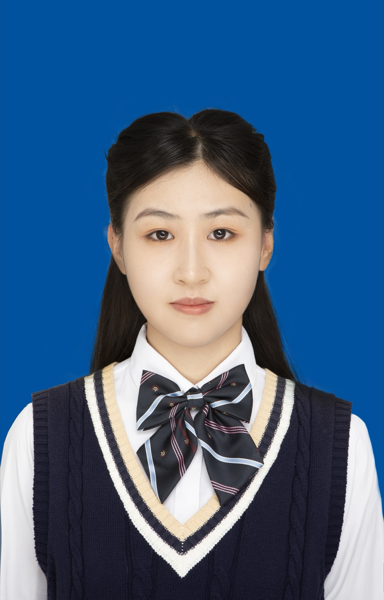

OPERATIONS & BUSINESS
赵丽蓉
ZHAO LIRONG2027 届硕士毕业生
VibecodingPythonSQLExcelPower BIAI 自动化PPT / PSCET-6

教育背景
合肥工业大学
物流工程与管理 · 硕士
- 相关课程：数理统计（100）、最优化方法（97）、工程经济学（92）、管理研究方法（87）等。
- 荣誉奖项：合肥工业大学一等学业奖学金 2 次、校三好学生。
浙江工商大学
物流管理 · 本科
- 学业成绩：成绩排名 1/87，GPA 3.91，保研至合肥工业大学物流工程与管理专业。
- 相关课程：仓储管理与库存控制（98）、统计学（94）、运输管理（93）、数据库原理与应用（92）、供应链管理（88）等。
- 荣誉奖项：优秀学生综合一等奖学金 3 次、浙江省政府奖学金 2 次、校三好学生 2 次。
实习经历
杭州认养一头牛生物科技有限公司
销售管理实习生
- 分销商管理：通过店铺巡价、投诉闭环与分销商专项整改推进价格治理，推动 Q2 常温奶整体破价率下降 1.5%，分销渠道破价率下降 3%。
- 流程与考核管理：参与建设销管飞书多维表，串联数据管理、投诉处理、整改提醒、考核确认及可视化看板，巡店效率提升 50%；开发 AI 工具整理考核名单，处理效率提升 80%。
- 渠道数据分析：按周统计品牌电商、新零售及生鲜渠道价格表现，输出破价趋势与分销商整改进度分析，为周度考核及后续整改跟进提供数据支持。
浙江大华技术股份有限公司
渠道运营实习生
- 合同与交付协同：负责天猫分销订单运营，完成合作协议签订、合同录入与审批、仓储备货、物流跟踪及订单台账维护；针对库存不足、物流延迟等异常，协调仓储、物流与商务调整交付方案。
杭州直行便供应链有限公司
采购管理实习生
- 采购履约协同：跟进 D2C 海外业务全量订单从下单、采购、发货、到货至入库的全流程，联动采购、仓库、商家及业务团队同步节点、处理异常，保障履约交付指标不低于 90%。
- 货源与异常管理：协助货源筛选优化、商品链接维护与货源配置调整，跟进退换货及到货入库异常，推动店铺 3 天发货率稳定在85% 以上。
- 履约数据分析：监控商家 3 天发货率、5 天到货率、仓库 7 天发货率等指标，按订单状态、物流节点及异常类型分类排查，保障仓库 7 天发货率稳定在70% 左右。
浙江工商大学管理工程与电子商务学院
学办助理
- 资料与费用流程：协助完成档案归档、报告整理、材料汇总及财务报销，曾在短时间内完成 200 余份毕业档案整理；长期对接师生及学院部门，及时处理信息偏差与材料遗漏。
校园经历
班级
学习委员 · 干部考核优秀
- 组织协调：连续 4 年负责学习信息整理与同步，组建学习群并策划学习经验分享会，统筹分享内容与现场组织。
院新媒体中心
采编部部长
- 跨部门协作：负责学院官方公众号选题、采写、排版与发布，对接学生会各部门及社团需求，完成 5 篇原创文章及多篇新闻稿、采访稿。
启程物流协会
学术部部长
- 活动组织：组织物流与供应链专业内容学习交流，协助举办浙江省大学生物流设计大赛，参与赛事组织与现场支持。
项目经历
“华为杯”研究生数学建模竞赛｜数据驱动下磁性元件的磁芯损耗建模| 队长（1/3）· 全国二等奖
- 数据建模与优化：对多源实验数据进行清洗、特征提取与预处理，结合PCA 降维、相关性分析及交互特征构造识别影响因素；构建精确率达 98.96% 的分类模型，并通过函数拟合与多目标优化完成工况优化，形成 5 万余字报告。
浙江省大学生物流设计大赛｜双碳背景下循环包装箱 C 端运营方案| 负责人（1/5）· 省赛二等奖
- 调研与问题拆解：通过网络调研与 SWOT 分析识别循环包装箱在回收、配送及用户参与方面的运作难点，将问题拆分为配送网络、回收布局与用户激励三类任务。
- 方案设计与交付：运用系统仿真优化驿站与社区配送，使用DBSCAN 聚类规划回收网络，并以演化博弈分析消费者行为、设计激励机制，形成 6.2 万余字项目报告。
AI 工具驱动的知识管理与运营自动化实践| AI 个人实践
- 综合实践：独立完成OfferPath 与 ShoreNote 的需求拆解、产品设计和持续迭代，实现AI 内容提取、智能解析、标签分类、资料归档及复习进度管理；同时结合OpenClaw、Gemini、Claude 与 Python + CDP搭建从选题、内容生成到自动发布的运营 SOP。
专业技能与自我评价
- Office 办公：熟练使用 Word、Excel、PPT；能运用 Excel 函数、数据透视表、图表及数据整理工具完成指标跟踪、数据分析与结构化报表输出。
- 数据与语言：掌握 Python、SQL、Power BI 及飞书多维表；通过大学英语四、六级考试，具备较好的英语读写译能力。
- 业务协同：具备采购、渠道、仓储、物流、商务等多方协作经验，重视需求确认、节点跟进、信息准确与问题闭环。
- 个人特质：认真负责，沟通与执行力强；能够在高任务量下保持稳定产出并快速融入团队，具备较强的学习与适应能力。